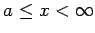

Inhalt Index DeskTop Bronstein

 Integralrechnung Bestimmte Integrale Uneigentliche Integrale, Stieltjes- und Lebesgue-Integrale Integrale mit unendlichen Integrationsgrenzen
Integralrechnung Bestimmte Integrale Uneigentliche Integrale, Stieltjes- und Lebesgue-Integrale Integrale mit unendlichen Integrationsgrenzen


Wenn sich die unmittelbare Berechnung der Grenzwerte (8.77), (8.78a) und (8.78b) schwierig gestaltet oder wenn lediglich nach der Konvergenz oder Divergenz eines uneigentlichen Integrals gefragt ist, dann kann eines der folgenden hinreichenden Kriterien benutzt werden. Hier wird lediglich das Integral (8.77) betrachtet. Das Integral (8.78a) kann durch Substitution von x durch -x auf das Integral vom Typ (8.77) zurückgeführt werden:
| (8.79) |
Das Integral vom Typ (8.78b) wird in eine Summe aus zwei Integralen vom Typ (8.77) und vom Typ (8.78a) zerlegt:
| (8.80) |
wobei c eine beliebige Zahl ist.
| (8.81) |
existiert, dann existiert auch das Integral (8.77). Das Integral (8.77) heißt in diesem Falle absolut konvergent und die Funktion f(x) absolut integrierbar auf der Halbachse  .
.
| (8.82a) |
dann darf von der Konvergenz des Integrals
auf die Konvergenz des Integrals
geschlossen werden und umgekehrt von der Divergenz des Integrals (8.82c) auf die Divergenz des Integrals (8.82b).
| (8.83a) |
und berücksichtigt man, daß das folgende Integral für gegen den angegebenen Wert konvergiert,
| (8.83b) |
während es für  divergiert, dann kann aus dem 2. Konvergenzkriterium ein weiteres hergeleitet werden:
divergiert, dann kann aus dem 2. Konvergenzkriterium ein weiteres hergeleitet werden:
Wenn f(x) in  eine positive Funktion ist und wenn eine Zahl  existiert, so daß für hinreichend große x
existiert, so daß für hinreichend große x
| (8.83c) |
gilt, dann konvergiert das Integral (8.77). Wenn allerdings f(x) positiv ist und eine Zahl existiert, so daß
| (8.83d) |
von einer gewissen Stelle an gilt, dann divergiert das Integral (8.77).
| Beispiel |
|
. Setzt man , dann ergibt sich . Das Integral ist divergent. |